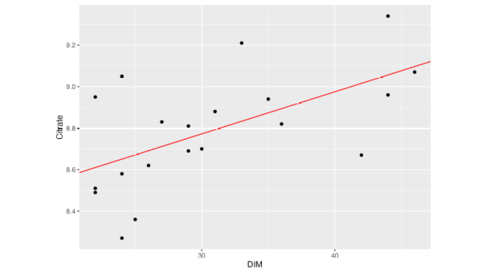
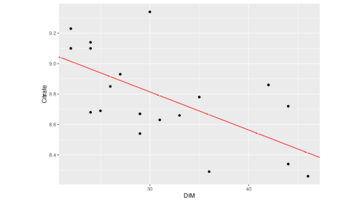

| Cow | DIM | Citrate |
|---|---|---|
| 1 | 22 | 9.10 |
| 2 | 22 | 9.23 |
| 3 | 22 | 9.10 |
| 4 | 24 | 8.68 |
| 5 | 24 | 9.10 |
| 6 | 24 | 9.14 |
| 7 | 25 | 8.69 |
| 8 | 26 | 8.85 |
| 9 | 27 | 8.93 |
| 10 | 29 | 8.67 |
| 11 | 29 | 8.54 |
| 12 | 30 | 9.34 |
| 13 | 31 | 8.63 |
| 14 | 33 | 8.66 |
| 15 | 35 | 8.78 |
| 16 | 36 | 8.29 |
| 17 | 42 | 8.86 |
| 18 | 44 | 8.34 |
| 19 | 44 | 8.72 |
| 20 | 46 | 8.26 |
Problem 1: Linear Regression
According to Figure 1 of (Chen et al. 2023) the concentration of citrate in milk between days in milk (DIM) 20 and 50 can be modeled by a linear regression. The dataset shown below contains measurements of 20 cows with their respective days in milk.
The dataset is available from
https://charlotte-ngs.github.io/asmasss2024/data/asm_exam_2024_p01.csv Solution
The regression model is given as
\[y = Xb + e\]
where vectors
- \(y\): vector of length \(n=20\) with known observations of the response variable
- \(b\): vector of length \(p=2\) with unknown effects (intercept and slope)
- \(e\): vector of length \(n=20\) with unknown random residuals
and Matrix \(X\) of dimension \(n\times p\) contains a column of all ones and the column with DIM values.
The known components are \(y\) and \(X\) and they can be specified by the information from the dataset
\[ y = \begin{bmatrix} 9.1 \\9.23 \\9.1 \\8.68 \\9.1 \\9.14 \\8.69 \\8.85 \\8.93 \\8.67 \\8.54 \\9.34 \\8.63 \\8.66 \\8.78 \\8.29 \\8.86 \\8.34 \\8.72 \\8.26\end{bmatrix} \text{, } X = \begin{bmatrix} 1 & 22 \\1 & 22 \\1 & 22 \\1 & 24 \\1 & 24 \\1 & 24 \\1 & 25 \\1 & 26 \\1 & 27 \\1 & 29 \\1 & 29 \\1 & 30 \\1 & 31 \\1 & 33 \\1 & 35 \\1 & 36 \\1 & 42 \\1 & 44 \\1 & 44 \\1 & 46\end{bmatrix} \]
Solution
The linear regression model fit is given by
lm_cit_dim <- lm(Citrate ~ DIM, data = tbl_p01)
smry_lm_cit_dim <- summary(lm_cit_dim)
smry_lm_cit_dim
Call:
lm(formula = Citrate ~ DIM, data = tbl_p01)
Residuals:
Min 1Q Median 3Q Max
-0.37391 -0.16177 -0.01203 0.14531 0.52570
Coefficients:
Estimate Std. Error t value Pr(>|t|)
(Intercept) 9.566262 0.221608 43.168 < 2e-16 ***
DIM -0.025065 0.006988 -3.587 0.00211 **
---
Signif. codes: 0 '***' 0.001 '**' 0.01 '*' 0.05 '.' 0.1 ' ' 1
Residual standard error: 0.2424 on 18 degrees of freedom
Multiple R-squared: 0.4168, Adjusted R-squared: 0.3845
F-statistic: 12.87 on 1 and 18 DF, p-value: 0.002107The estimates for the quantities asked in the problem are listed in the following table
| Quantity | Estimate |
|---|---|
| Slope | -0.0250654 |
| Intercept | 9.5662617 |
| Variance of Residuals | 0.0587783 |


Solution
The second plot is correct. The following components could be inserted into the plot
Solution
It is not possible, because DIM between 1 and 10 are outside of the DIM range of the dataset. Figure 1 in (Chen et al. 2023) shows that before DIM 20 the relationship is different from what was modelled in 1b). Hence a prediction of the citrate concentration would be extrapolation which is not allowed here.
Problem 2: Fixed Linear Effects Model
In the dataset below, the influence of the breed on the citrate concentration in milk is investigated.
| Cow | DIM | Breed | Citrate |
|---|---|---|---|
| 1 | 22 | BS | 8.71 |
| 2 | 22 | HO | 9.99 |
| 3 | 22 | BS | 8.84 |
| 4 | 24 | BS | 8.87 |
| 5 | 24 | BS | 9.03 |
| 6 | 24 | BS | 8.57 |
| 7 | 25 | BS | 9.25 |
| 8 | 26 | HO | 9.22 |
| 9 | 27 | HO | 9.57 |
| 10 | 29 | BS | 8.66 |
| 11 | 29 | BS | 8.80 |
| 12 | 30 | BS | 8.80 |
| 13 | 31 | HO | 9.67 |
| 14 | 33 | HO | 9.21 |
| 15 | 35 | HO | 9.63 |
| 16 | 36 | HO | 8.83 |
| 17 | 42 | HO | 8.76 |
| 18 | 44 | HO | 8.95 |
| 19 | 44 | BS | 8.67 |
| 20 | 46 | BS | 8.56 |
The dataset is available from
https://charlotte-ngs.github.io/asmasss2024/data/asm_exam_2024_p02.csv Solution
The fixed linear effects model is fitted as follows
lm_cit_dim_br <- lm(Citrate ~ DIM + Breed, data = tbl_p02)
smry_lm_cit_dim_br <- summary(lm_cit_dim_br)
smry_lm_cit_dim_br
Call:
lm(formula = Citrate ~ DIM + Breed, data = tbl_p02)
Residuals:
Min 1Q Median 3Q Max
-0.41096 -0.16520 -0.02042 0.18088 0.41835
Coefficients:
Estimate Std. Error t value Pr(>|t|)
(Intercept) 9.481374 0.245866 38.563 < 2e-16 ***
DIM -0.023621 0.008004 -2.951 0.008936 **
BreedHO 0.609940 0.124814 4.887 0.000139 ***
---
Signif. codes: 0 '***' 0.001 '**' 0.01 '*' 0.05 '.' 0.1 ' ' 1
Residual standard error: 0.2689 on 17 degrees of freedom
Multiple R-squared: 0.6144, Adjusted R-squared: 0.569
F-statistic: 13.54 on 2 and 17 DF, p-value: 0.0003038Solution
Estimates for the regression slope is: -0.0236211
Group means are determined based on the dataset as check
library(dplyr)
tbl_gr_means_p02 <- tbl_p02 %>%
group_by(Breed) %>%
summarise(GrM_Cit = mean(Citrate),
GrM_DIM = mean(DIM))
tbl_gr_means_p02# A tibble: 2 × 3
Breed GrM_Cit GrM_DIM
<chr> <dbl> <dbl>
1 BS 8.80 29
2 HO 9.31 32.9Group means based on modelling results for breed BS
smry_lm_cit_dim_br$coefficients["(Intercept)", "Estimate"] +
tbl_gr_means_p02$GrM_DIM[tbl_gr_means_p02$Breed == cur_breed] *
smry_lm_cit_dim_br$coefficients["DIM", "Estimate"][1] 8.796364Group means based on modelling results for breed HO
smry_lm_cit_dim_br$coefficients["(Intercept)", "Estimate"] +
tbl_gr_means_p02$GrM_DIM[tbl_gr_means_p02$Breed == cur_breed] *
smry_lm_cit_dim_br$coefficients["DIM", "Estimate"] +
smry_lm_cit_dim_br$coefficients["BreedHO", "Estimate"] [1] 9.314444Solution
Expected value of citrate concentration for animals of breed BS
smry_lm_cit_dim_br$coefficients["(Intercept)", "Estimate"] +
n_dim_pred * smry_lm_cit_dim_br$coefficients["DIM", "Estimate"][1] 8.772743Expected value of citrate concentration for animals of breed HO
smry_lm_cit_dim_br$coefficients["(Intercept)", "Estimate"] +
n_dim_pred * smry_lm_cit_dim_br$coefficients["DIM", "Estimate"] +
smry_lm_cit_dim_br$coefficients["BreedHO", "Estimate"] [1] 9.382683Problem 3: Interactions
Use the following dataset to fit a fixed linear model assuming that the regression of Citrate on DIM shows an interaction with the Breed factor.
| Cow | DIM | Breed | Citrate |
|---|---|---|---|
| 1 | 22 | BS | 8.21 |
| 2 | 22 | HO | 9.51 |
| 3 | 22 | BS | 8.34 |
| 4 | 24 | BS | 8.37 |
| 5 | 24 | BS | 8.53 |
| 6 | 24 | BS | 8.07 |
| 7 | 25 | BS | 8.75 |
| 8 | 26 | HO | 8.74 |
| 9 | 27 | HO | 9.10 |
| 10 | 29 | BS | 8.16 |
| 11 | 29 | BS | 8.30 |
| 12 | 30 | BS | 8.30 |
| 13 | 31 | HO | 9.20 |
| 14 | 33 | HO | 8.75 |
| 15 | 35 | HO | 9.16 |
| 16 | 36 | HO | 8.36 |
| 17 | 42 | HO | 8.30 |
| 18 | 44 | HO | 8.49 |
| 19 | 44 | BS | 8.17 |
| 20 | 46 | BS | 8.06 |
The dataset is available from
https://charlotte-ngs.github.io/asmasss2024/data/asm_exam_2024_p03.csv Solution
The fixed linear effects model including an interaction term between DIM and Breed is fitted to the data by
lm_cit_dim_br_inta <- lm(Citrate ~ DIM * Breed, data = tbl_p03)
smry_lm_cit_dim_br_inta <- summary(lm_cit_dim_br_inta)
smry_lm_cit_dim_br_inta
Call:
lm(formula = Citrate ~ DIM * Breed, data = tbl_p03)
Residuals:
Min 1Q Median 3Q Max
-0.40476 -0.13973 0.00115 0.13979 0.40915
Coefficients:
Estimate Std. Error t value Pr(>|t|)
(Intercept) 8.618906 0.274677 31.378 8.45e-16 ***
DIM -0.011122 0.009131 -1.218 0.24084
BreedHO 1.655131 0.481022 3.441 0.00336 **
DIM:BreedHO -0.032311 0.014883 -2.171 0.04531 *
---
Signif. codes: 0 '***' 0.001 '**' 0.01 '*' 0.05 '.' 0.1 ' ' 1
Residual standard error: 0.2423 on 16 degrees of freedom
Multiple R-squared: 0.7172, Adjusted R-squared: 0.6642
F-statistic: 13.53 on 3 and 16 DF, p-value: 0.0001181Solution
The expected difference in citrate concentration in the milk for animals of breed
- BS corresponds to the regression coefficient times the difference in DIM
n_delta_dim <- n_dim_end_intac - n_dim_start_intac
n_delta_citr_bs <- smry_lm_cit_dim_br_inta$coefficients["DIM", "Estimate"] * n_delta_dim
n_delta_citr_bs[1] -0.1112216- HO corresponds to the regression coefficient plus the interaction term times the difference in DIM
n_delta_dim <- n_dim_end_intac - n_dim_start_intac
n_delta_citr_ho <- (smry_lm_cit_dim_br_inta$coefficients["DIM", "Estimate"] +
smry_lm_cit_dim_br_inta$coefficients["DIM:BreedHO", "Estimate"]) * n_delta_dim
n_delta_citr_ho[1] -0.4343358Problem 4: Contrasts
The dataset below is used to fit a fixed linear effects model with Citrate as response and Breed as fixed effect.
| Cow | Breed | Citrate |
|---|---|---|
| 1 | BS | 8.71 |
| 2 | HO | 9.99 |
| 3 | BS | 8.84 |
| 4 | BS | 8.87 |
| 5 | BS | 9.03 |
| 6 | BS | 8.57 |
| 7 | BS | 9.25 |
| 8 | HO | 9.22 |
| 9 | HO | 9.57 |
| 10 | BS | 8.66 |
| 11 | BS | 8.80 |
| 12 | BS | 8.80 |
| 13 | HO | 9.67 |
| 14 | HO | 9.21 |
| 15 | HO | 9.63 |
| 16 | HO | 8.83 |
| 17 | HO | 8.76 |
| 18 | HO | 8.95 |
| 19 | BS | 8.67 |
| 20 | BS | 8.56 |
The dataset is available from
https://charlotte-ngs.github.io/asmasss2024/data/asm_exam_2024_p04.csv Solution
Treatment contrasts are used by default by lm() when fitting a FLEM. Hence the fit is obtained by
lm_cit_br <- lm(Citrate ~ Breed, data = tbl_p04)
smry_lm_cit_br <- summary(lm_cit_br)
smry_lm_cit_br
Call:
lm(formula = Citrate ~ Breed, data = tbl_p04)
Residuals:
Min 1Q Median 3Q Max
-0.55444 -0.15886 -0.04136 0.23912 0.67556
Coefficients:
Estimate Std. Error t value Pr(>|t|)
(Intercept) 8.7964 0.0969 90.774 < 2e-16 ***
BreedHO 0.5181 0.1445 3.586 0.00211 **
---
Signif. codes: 0 '***' 0.001 '**' 0.01 '*' 0.05 '.' 0.1 ' ' 1
Residual standard error: 0.3214 on 18 degrees of freedom
Multiple R-squared: 0.4168, Adjusted R-squared: 0.3844
F-statistic: 12.86 on 1 and 18 DF, p-value: 0.00211Assuming treatment contrasts, verification via group means is done as follows
- Intercept estimate corresponds to the mean of all BS animals
mean(tbl_p04$Citrate[tbl_p04$Breed == "BS"])[1] 8.796364This is expected to be the same as
smry_lm_cit_br$coefficients["(Intercept)", "Estimate"][1] 8.796364- The difference between the group means of HO animals minus the group mean of the BS animals corresponds to the reported breed effect, hence
mean(tbl_p04$Citrate[tbl_p04$Breed == "HO"]) - mean(tbl_p04$Citrate[tbl_p04$Breed == "BS"])[1] 0.5180808is expected to be the same as
smry_lm_cit_br$coefficients["BreedHO", "Estimate"][1] 0.5180808- The breed effect estimated can also be verified via solutions of the least squares normal equations
mat_X <- model.matrix(Citrate ~ 0 + Breed, tbl_p04)
attr(mat_X, "assign") <- NULL
attr(mat_X, "contrasts") <- NULL
colnames(mat_X) <- NULL
mat_X <- cbind(matrix(rep(1,nrow(mat_X)), ncol = 1), mat_X)
mat_xtx <- crossprod(mat_X)
mat_xtx_ginv <- MASS::ginv(mat_xtx)
mat_xty <- crossprod(mat_X, tbl_p04$Citrate)
mat_b_sol <- crossprod(mat_xtx_ginv, mat_xty)
mat_b_sol [,1]
[1,] 6.036936
[2,] 2.759428
[3,] 3.277508Contrasts matrix for treatment contrasts
fac_breed <- as.factor(tbl_p04$Breed)
contr_mat_breed_treat <- contrasts(fac_breed)
contr_mat_breed_treat <- cbind(matrix(rep(1,nrow(contr_mat_breed_treat)), ncol = 1),
contr_mat_breed_treat)
est_mat_breed_treat <- solve(contr_mat_breed_treat)
est_mat_breed_treat BS HO
1 0
HO -1 1For the effects estimates, we are looking at the second and the third row of the matrix est_mat_breed_treat. We are prepending a column of zeroes to the second and the third row of est_mat_breed_treat.
n_nrow_est_mat <- nrow(est_mat_breed_treat)
mat_q_efun <- cbind(matrix(0, nrow = (nrow(est_mat_breed_treat)-1), ncol = 1),
matrix(est_mat_breed_treat[2:n_nrow_est_mat,],
nrow = (nrow(est_mat_breed_treat)-1)))
crossprod(t(mat_q_efun), mat_b_sol) [,1]
[1,] 0.5180808Solution
The fixed linear effects model using sum contrasts is fitted as shown below
lm_cit_br_csum <- lm(Citrate ~ Breed, data = tbl_p04, contrasts = list(Breed = "contr.sum"))
smry_lm_cit_br_csum <- summary(lm_cit_br_csum)
smry_lm_cit_br_csum
Call:
lm(formula = Citrate ~ Breed, data = tbl_p04, contrasts = list(Breed = "contr.sum"))
Residuals:
Min 1Q Median 3Q Max
-0.55444 -0.15886 -0.04136 0.23912 0.67556
Coefficients:
Estimate Std. Error t value Pr(>|t|)
(Intercept) 9.05540 0.07223 125.373 < 2e-16 ***
Breed1 -0.25904 0.07223 -3.586 0.00211 **
---
Signif. codes: 0 '***' 0.001 '**' 0.01 '*' 0.05 '.' 0.1 ' ' 1
Residual standard error: 0.3214 on 18 degrees of freedom
Multiple R-squared: 0.4168, Adjusted R-squared: 0.3844
F-statistic: 12.86 on 1 and 18 DF, p-value: 0.00211- Contrasts Matrix for Sum Contrasts From the contrasts matrix, we get the matrix of estimable functions.
fac_breed <- as.factor(tbl_p04$Breed)
contr_mat_breed_sum <- contrasts(C(fac_breed, sum))
contr_mat_breed_sum <- cbind(matrix(rep(1,nrow(contr_mat_breed_sum)), ncol = 1), contr_mat_breed_sum)
est_mat_breed_sum <- solve(contr_mat_breed_sum)
est_mat_breed_sum BS HO
[1,] 0.5 0.5
[2,] 0.5 -0.5The matrix est_mat_breed_sum tells us that the estimate for the intercept (first row) is computed as the mean of the group means for the two breeds and the estimate for the breed effect (second row) is computed as half of the difference between group means for the first breed minus the group mean of the second breed.
Hence the estimate of the intercept is
mean(c(mean(tbl_p04$Citrate[tbl_p04$Breed == "BS"]),
mean(tbl_p04$Citrate[tbl_p04$Breed == "HO"])))[1] 9.055404and has to be equal to
smry_lm_cit_br_csum$coefficients["(Intercept)", "Estimate"][1] 9.055404The estimate for the breed-effect is obtained by
0.5 * (mean(tbl_p04$Citrate[tbl_p04$Breed == "BS"]) - mean(tbl_p04$Citrate[tbl_p04$Breed == "HO"]))[1] -0.2590404which is the same as
smry_lm_cit_br_csum$coefficients["Breed1", "Estimate"][1] -0.2590404The verification with the solution of the least squares normal equation is done with
n_nrow_est_mat <- nrow(est_mat_breed_sum)
mat_q_efun <- cbind(matrix(0, nrow = (nrow(est_mat_breed_sum)-1), ncol = 1),
matrix(est_mat_breed_sum[2:n_nrow_est_mat,],
nrow = (nrow(est_mat_breed_sum)-1)))
crossprod(t(mat_q_efun), mat_b_sol) [,1]
[1,] -0.2590404Problem 5: Linear Mixed Effects Models
Use the dataset below to fit a linear mixed effects model. In this model Citrate is the response and DIM and Breed are regression variables and fixed effects, respectively. You do not have to include any interaction effects.
| ID | Sire | Dam | DIM | Breed | Citrate |
|---|---|---|---|---|---|
| 5 | 1 | NA | 22 | BS | 9.30 |
| 6 | 1 | NA | 22 | HO | 9.26 |
| 7 | 1 | 5 | 22 | BS | 8.92 |
| 8 | 1 | 5 | 24 | BS | 9.30 |
| 9 | 1 | 6 | 24 | BS | 9.03 |
| 10 | 1 | 6 | 24 | BS | 8.82 |
| 11 | 2 | 7 | 25 | BS | 9.09 |
| 12 | 2 | 7 | 26 | HO | 9.04 |
| 13 | 2 | 8 | 27 | HO | 9.71 |
| 14 | 2 | 8 | 29 | BS | 8.52 |
| 15 | 2 | 9 | 29 | BS | 9.18 |
| 16 | 3 | 9 | 30 | BS | 8.85 |
| 17 | 3 | 10 | 31 | HO | 9.04 |
| 18 | 3 | 10 | 33 | HO | 9.04 |
| 19 | 3 | 11 | 35 | HO | 9.44 |
| 20 | 3 | 11 | 36 | HO | 9.18 |
| 21 | 3 | 12 | 42 | HO | 8.88 |
| 22 | 4 | 12 | 44 | HO | 8.96 |
| 23 | 4 | 13 | 44 | BS | 8.74 |
| 24 | 4 | 13 | 46 | BS | 8.52 |
The dataset is available from
https://charlotte-ngs.github.io/asmasss2024/data/asm_exam_2024_p05.csv Solution
- Model as equation:
\[y = Xb + Zs + e\] where
| \(y\) | vector of observations |
| \(b\) | vector of intercept, regression coefficient and fixed effects |
| \(s\) | vector of random sire breeding values |
| \(e\) | vector of random residuals |
| \(X\) | design matrix linking observations to fixed effects |
| \(Z\) | design matrix linking observations to sire breeding values |
- Expected values and the variance-covariance matrices:
Random effects are \(y\), \(s\) and \(e\). Their expected values correspond to
\[E\left[\begin{array}{c}y \\ s \\ e \end{array}\right] = \left[\begin{array}{c}Xb \\ 0 \\ 0 \end{array}\right] \]
The variance-covariance matrices
\[ var\left[\begin{array}{c}y \\ s \\ e \end{array}\right] = \left[\begin{array}{ccc} V & ZS & R \\ SZ^T & S & 0 \\ R & 0 & R \end{array}\right] \]
where \(var(s) = S = I * \sigma_s^2\), \(var(e) = R = I * \sigma_e^2\) and \(var(y) = V = ZSZ^T + R = ZZ^T\sigma_s^2 + R\) with given sire-variance component \(\sigma_s^2\) and given residual variance component \(\sigma_e^2\).
- Information from data to model components
\[ y = \begin{bmatrix} 9.3 \\9.26 \\8.92 \\9.3 \\9.03 \\8.82 \\9.09 \\9.04 \\9.71 \\8.52 \\9.18 \\8.85 \\9.04 \\9.04 \\9.44 \\9.18 \\8.88 \\8.96 \\8.74 \\8.52\end{bmatrix}\text{, }b = \begin{bmatrix} b_0 \\b_{DIM} \\b_{BreedHO}\end{bmatrix}\text{, }s = \begin{bmatrix} s_{1} \\s_{2} \\s_{3} \\s_{4}\end{bmatrix}\text{, }e = \begin{bmatrix} e_{5} \\e_{6} \\e_{7} \\e_{8} \\e_{9} \\e_{10} \\e_{11} \\e_{12} \\e_{13} \\e_{14} \\e_{15} \\e_{16} \\e_{17} \\e_{18} \\e_{19} \\e_{20} \\e_{21} \\e_{22} \\e_{23} \\e_{24}\end{bmatrix}\]
\[ X = \begin{bmatrix} 1 & 22 & 0 \\1 & 22 & 1 \\1 & 22 & 0 \\1 & 24 & 0 \\1 & 24 & 0 \\1 & 24 & 0 \\1 & 25 & 0 \\1 & 26 & 1 \\1 & 27 & 1 \\1 & 29 & 0 \\1 & 29 & 0 \\1 & 30 & 0 \\1 & 31 & 1 \\1 & 33 & 1 \\1 & 35 & 1 \\1 & 36 & 1 \\1 & 42 & 1 \\1 & 44 & 1 \\1 & 44 & 0 \\1 & 46 & 0\end{bmatrix}\text{, }Z = \begin{bmatrix} 1 & 0 & 0 & 0 \\1 & 0 & 0 & 0 \\1 & 0 & 0 & 0 \\1 & 0 & 0 & 0 \\1 & 0 & 0 & 0 \\1 & 0 & 0 & 0 \\0 & 1 & 0 & 0 \\0 & 1 & 0 & 0 \\0 & 1 & 0 & 0 \\0 & 1 & 0 & 0 \\0 & 1 & 0 & 0 \\0 & 0 & 1 & 0 \\0 & 0 & 1 & 0 \\0 & 0 & 1 & 0 \\0 & 0 & 1 & 0 \\0 & 0 & 1 & 0 \\0 & 0 & 1 & 0 \\0 & 0 & 0 & 1 \\0 & 0 & 0 & 1 \\0 & 0 & 0 & 1\end{bmatrix}\]
- Mixed model equations:
\[ \left[ \begin{array}{cc} X^TX & X^TZ \\ Z^TX & Z^TZ + \lambda_s * I \end{array} \right] \left[ \begin{array}{c} \hat{b} \\ \hat{s} \end{array} \right] = \left[ \begin{array}{c} X^Ty \\ Z^Ty \end{array} \right] \]
- Solutions of MME
mat_xtx <- crossprod(mat_X_p05)
mat_xtz <- crossprod(mat_X_p05, mat_Z_sire)
mat_ztx <- t(mat_xtz)
mat_ztz_lAsinv <- crossprod(mat_Z_sire) + n_lambda_s * diag(1, nrow = n_nr_sire)
mat_coef_sire <- rbind(cbind(mat_xtx, mat_xtz), cbind(mat_ztx, mat_ztz_lAsinv))
mat_rhs_sire <- rbind(crossprod(mat_X_p05, vec_y), crossprod(mat_Z_sire, vec_y))
mat_sol_sire <- solve(mat_coef_sire, mat_rhs_sire)
mat_sol_sire [,1]
[1,] 9.5007575600
[2,] -0.0196080127
[3,] 0.3196246901
[4,] 0.0008951716
[5,] 0.0052561969
[6,] -0.0086811736
[7,] 0.0025298051- Estimates of intercept, regression coefficient and fixed effect for
BreedHOare given by
tbl_sire_result <- tibble::tibble(Effect = c("Intercept",
"Regression Coefficient",
"BreedHO Effect"),
Estimate = mat_sol_sire[1:3,])
knitr::kable(tbl_sire_result)| Effect | Estimate |
|---|---|
| Intercept | 9.5007576 |
| Regression Coefficient | -0.0196080 |
| BreedHO Effect | 0.3196247 |
- Predicted breeding values for the sires are
vec_sire_pbv <- mat_sol_sire[(nrow(mat_sol_sire)-n_nr_sire+1):nrow(mat_sol_sire),]
vec_sire_pbv[1] 0.0008951716 0.0052561969 -0.0086811736 0.0025298051The order of the sires according to the predicted breeding values is given by
vec_sire_pbv[order(vec_sire_pbv, decreasing = T)][1] 0.0052561969 0.0025298051 0.0008951716 -0.0086811736Solution
- Model as equation:
\[y = Xb + Zu + e\] where
| \(y\) | vector of observations |
| \(b\) | vector of intercept, regression coefficient and fixed effects |
| \(u\) | vector of random breeding values |
| \(e\) | vector of random residuals |
| \(X\) | design matrix linking observations to fixed effects |
| \(Z\) | design matrix linking observations to sire breeding values |
- Expected values and the variance-covariance matrices:
Random effects are \(y\), \(u\) and \(e\). Their expected values correspond to
\[E\left[\begin{array}{c}y \\ u \\ e \end{array}\right] = \left[\begin{array}{c}Xb \\ 0 \\ 0 \end{array}\right] \]
The variance-covariance matrices
\[ var\left[\begin{array}{c}y \\ u \\ e \end{array}\right] = \left[\begin{array}{ccc} V & ZU & R \\ UZ^T & U & 0 \\ R & 0 & R \end{array}\right] \]
where \(var(u) = U = A * \sigma_u^2\), \(var(e) = R = I * \sigma_e^2\) and \(var(y) = V = ZUZ^T + R\) with given additive genetic variance component \(\sigma_u^2\) and given residual variance component \(\sigma_e^2\).
- Information from data to model components
\[ y = \begin{bmatrix} 9.3 \\9.26 \\8.92 \\9.3 \\9.03 \\8.82 \\9.09 \\9.04 \\9.71 \\8.52 \\9.18 \\8.85 \\9.04 \\9.04 \\9.44 \\9.18 \\8.88 \\8.96 \\8.74 \\8.52\end{bmatrix}\text{, }b = \begin{bmatrix} b_0 \\b_{DIM} \\b_{BreedHO}\end{bmatrix}\text{, }u = \begin{bmatrix} u_{1} \\u_{2} \\u_{3} \\u_{4} \\u_{5} \\u_{6} \\u_{7} \\u_{8} \\u_{9} \\u_{10} \\u_{11} \\u_{12} \\u_{13} \\u_{14} \\u_{15} \\u_{16} \\u_{17} \\u_{18} \\u_{19} \\u_{20} \\u_{21} \\u_{22} \\u_{23} \\u_{24}\end{bmatrix}\text{, }e = \begin{bmatrix} e_{5} \\e_{6} \\e_{7} \\e_{8} \\e_{9} \\e_{10} \\e_{11} \\e_{12} \\e_{13} \\e_{14} \\e_{15} \\e_{16} \\e_{17} \\e_{18} \\e_{19} \\e_{20} \\e_{21} \\e_{22} \\e_{23} \\e_{24}\end{bmatrix}\]
\[ X = \begin{bmatrix} 1 & 22 & 0 \\1 & 22 & 1 \\1 & 22 & 0 \\1 & 24 & 0 \\1 & 24 & 0 \\1 & 24 & 0 \\1 & 25 & 0 \\1 & 26 & 1 \\1 & 27 & 1 \\1 & 29 & 0 \\1 & 29 & 0 \\1 & 30 & 0 \\1 & 31 & 1 \\1 & 33 & 1 \\1 & 35 & 1 \\1 & 36 & 1 \\1 & 42 & 1 \\1 & 44 & 1 \\1 & 44 & 0 \\1 & 46 & 0\end{bmatrix}\]
\[ Z = \]
- Mixed model equations:
\[ \left[ \begin{array}{cc} X^TX & X^TZ \\ Z^TX & Z^TZ + \lambda_u * A^{-1} \end{array} \right] \left[ \begin{array}{c} \hat{b} \\ \hat{u} \end{array} \right] = \left[ \begin{array}{c} X^Ty \\ Z^Ty \end{array} \right] \]
Loading required package: lme4Loading required package: Matrix'as(<dtTMatrix>, "dtCMatrix")' is deprecated.
Use 'as(., "CsparseMatrix")' instead.
See help("Deprecated") and help("Matrix-deprecated").where \(\lambda_u = \frac{\sigma_e^2}{\sigma_u^2} = 1.78\) and \(A\) corresponds to the numerator relationship matrix given by
\[A = \]
The inverse \(A_s^{-1}\) is
\[A^{-1} = \]
- Solutions of MME
mat_xtx <- crossprod(mat_X_p05)
mat_xtz <- crossprod(mat_X_p05, mat_Z_ani)
mat_ztx <- t(mat_xtz)
mat_ztz_lAinv <- crossprod(mat_Z_ani) + n_lambda_u * mat_A_inv
mat_coef_ani <- rbind(cbind(mat_xtx, mat_xtz), cbind(mat_ztx, mat_ztz_lAinv))
mat_rhs_ani <- rbind(crossprod(mat_X_p05, vec_y), crossprod(mat_Z_ani, vec_y))
mat_sol_ani <- solve(mat_coef_ani, mat_rhs_ani)
mat_sol_ani [,1]
9.539690005
-0.021267432
0.349117898
1 -0.019522398
2 0.015023764
3 -0.007240318
4 0.004130529
5 0.060900627
6 -0.069010391
7 -0.025382473
8 0.066991716
9 -0.015315320
10 -0.100579302
11 0.036875067
12 -0.065712408
13 0.109473105
14 -0.046579510
15 0.050600530
16 -0.019246384
17 -0.080664433
18 -0.072272549
19 0.076382029
20 0.024028396
21 -0.053822726
22 -0.022512425
23 0.074186722
24 0.035268929- Estimates of intercept, regression coefficient and fixed effect for
BreedHOare given by
tbl_ani_result <- tibble::tibble(Effect = c("Intercept",
"Regression Coefficient",
"BreedHO Effect"),
Estimate = mat_sol_ani[1:3,])
knitr::kable(tbl_ani_result)| Effect | Estimate |
|---|---|
| Intercept | 9.5396900 |
| Regression Coefficient | -0.0212674 |
| BreedHO Effect | 0.3491179 |
- Predicted breeding values for all animals: The first two elements are solutions of fixed effects, the remaining elements are predicted breeding values
| Animals | Predicted Breeding Values |
|---|---|
| 1 | -0.0195224 |
| 2 | 0.0150238 |
| 3 | -0.0072403 |
| 4 | 0.0041305 |
| 5 | 0.0609006 |
| 6 | -0.0690104 |
| 7 | -0.0253825 |
| 8 | 0.0669917 |
| 9 | -0.0153153 |
| 10 | -0.1005793 |
| 11 | 0.0368751 |
| 12 | -0.0657124 |
| 13 | 0.1094731 |
| 14 | -0.0465795 |
| 15 | 0.0506005 |
| 16 | -0.0192464 |
| 17 | -0.0806644 |
| 18 | -0.0722725 |
| 19 | 0.0763820 |
| 20 | 0.0240284 |
| 21 | -0.0538227 |
| 22 | -0.0225124 |
| 23 | 0.0741867 |
| 24 | 0.0352689 |
References
Chen, Yansen, Hongqing Hu, Nicolas Gengler, Cl’ement Grelet, and Katrien Wijnrocx. 2023. “Genetic analysis of milk citrate predicted by milk mid- infrared spectra of Holstein cows in early lactation.” J. Dairy Sci. https://doi.org/10.3168/jds.2023-23903.